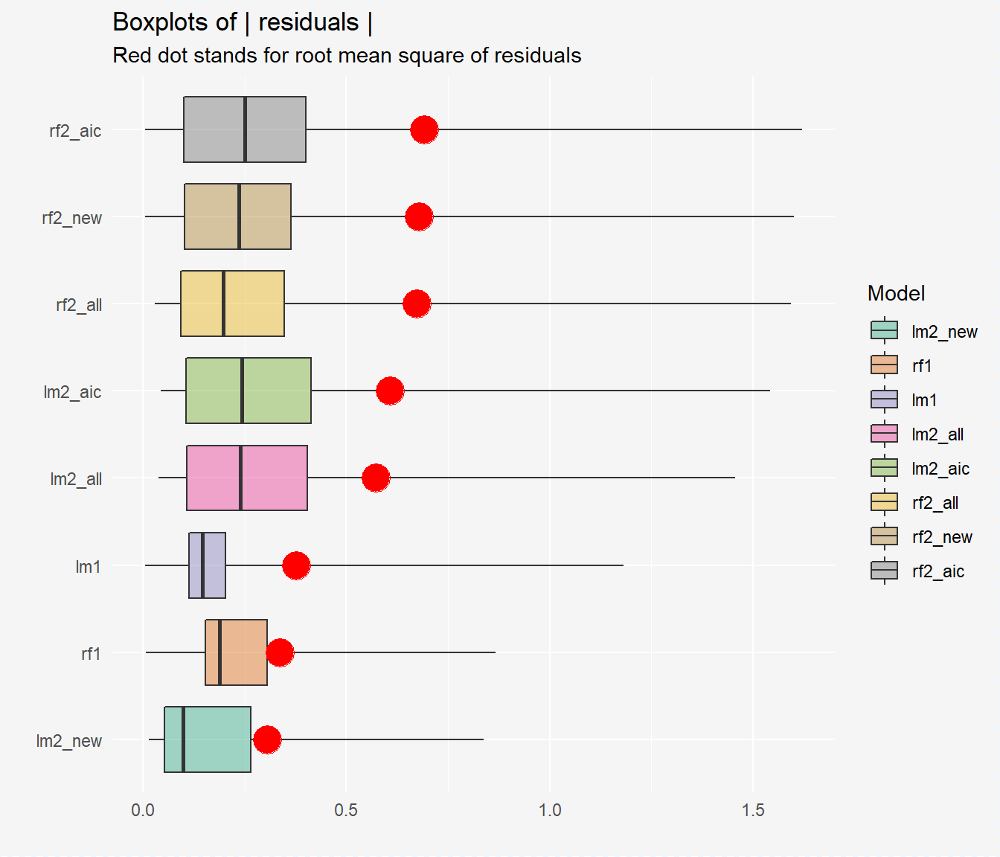
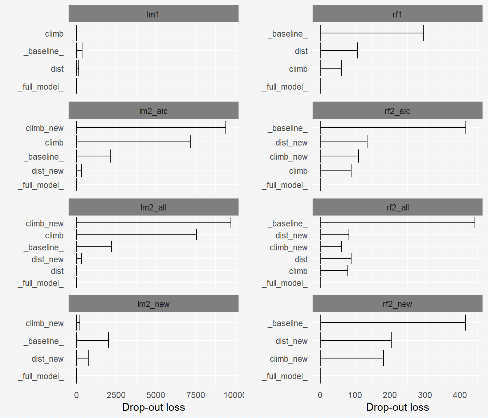

SAFE examples - hills dataset
Anna Gierlak
example_hills.RmdModele oparte na oryginalnych danych:
model_lm1 <- lm(time ~ ., data = hills[1:12,])
explainer_lm1 <- explain(model_lm1, data = hills[13:24,1:2], y = hills[13:24,3], label = "lm1")
set.seed(111)
model_rf1 <- randomForest(time ~ ., data = hills[1:12,])
explainer_rf1 <- explain(model_rf1, data = hills[13:24,1:2], y = hills[13:24,3], label = "rf1")Transformacje (package=strucchange, type=linear):
trans_prop <- transform_propositions(explainer_rf1, package = "strucchange", type = "linear", plot = TRUE)
#> These are the propositions for variables transformations:
#>
#> Transformation for 'dist' variable:
#> <=9.5: 0.0425880158751154 * dist + 0.552047141099774
#> >9.5: 0.281270565329219 * dist - 2.00533907043652
#>
#> Transformation for 'climb' variable:
#> <=1312.5: 5.44757247370824e-05 * climb + 0.618651740746864
#> >1312.5: 0.000296430595303419 * climb + 0.357553248723785
data1_new <- transform_data(hills[13:24,1:2], hills[13:24,3], trans_prop, which_variables = "only_new")
data1_all <- transform_data(hills[13:24,1:2], hills[13:24,3], trans_prop, which_variables = "all")
data1_aic <- transform_data(hills[13:24,1:2], hills[13:24,3], trans_prop, which_variables = "aic")
#> Start: AIC=-25.62
#> y ~ dist + climb + dist_new + climb_new
#>
#> Df Sum of Sq RSS AIC
#> - dist 1 0.000444 0.61727 -27.608
#> - dist_new 1 0.098112 0.71494 -25.846
#> <none> 0.61683 -25.617
#> - climb 1 0.297694 0.91453 -22.891
#> - climb_new 1 0.302958 0.91979 -22.822
#>
#> Step: AIC=-27.61
#> y ~ climb + dist_new + climb_new
#>
#> Df Sum of Sq RSS AIC
#> <none> 0.61727 -27.608
#> - climb 1 0.35127 0.96855 -24.202
#> - climb_new 1 0.47897 1.09624 -22.716
#> - dist_new 1 0.55525 1.17252 -21.909
data1_new <- cbind(hills[13:24,3], data1_new)
colnames(data1_new)[1] <- 'time'
data1_all <- cbind(hills[13:24,3], data1_all)
colnames(data1_all)[1] <- 'time'
data1_aic <- cbind(hills[13:24,3], data1_aic)
colnames(data1_aic)[1] <- 'time'| time | dist | climb | dist_new | climb_new |
|---|---|---|---|---|
| 1.0833333 | 9.5 | 2200 | 0.9566333 | 1.0097006 |
| 0.7355556 | 6.0 | 500 | 0.8075752 | 0.6458896 |
| 0.4488889 | 4.5 | 1500 | 0.7436932 | 0.8021991 |
| 1.2041667 | 10.0 | 3000 | 0.8073666 | 1.2468450 |
| 1.6402778 | 14.0 | 2200 | 1.9324488 | 1.0097006 |
| 1.3108333 | 3.0 | 350 | 0.6798112 | 0.6377182 |
data2_new <- transform_data(hills[25:nrow(hills),1:2], hills[25:nrow(hills),3], trans_prop, which_variables = "only_new")
data2_all <- transform_data(hills[25:nrow(hills),1:2], hills[25:nrow(hills),3], trans_prop, which_variables = "all")
data2_aic <- transform_data(hills[25:nrow(hills),1:2], hills[25:nrow(hills),3], trans_prop, which_variables = "all")
data2_aic <- data2_aic[,names(data2_aic) %in% names(data1_aic)]
model_lm2_new <- lm(time ~ ., data = data1_new)
explainer_lm2_new <- explain(model_lm2_new, data = data2_new, y = hills[25:nrow(hills),3], label = "lm2_new")
model_lm2_all <- lm(time ~ ., data = data1_all)
explainer_lm2_all <- explain(model_lm2_all, data = data2_all, y = hills[25:nrow(hills),3], label = "lm2_all")
model_lm2_aic <- lm(time ~ ., data = data1_aic)
explainer_lm2_aic <- explain(model_lm2_aic, data = data2_aic, y = hills[25:nrow(hills),3], label = "lm2_aic")
set.seed(111)
model_rf2_new <- randomForest(time ~ ., data = data1_new)
explainer_rf2_new <- explain(model_rf2_new, data2_new, hills[25:nrow(hills),3], label = "rf2_new")
set.seed(111)
model_rf2_all <- randomForest(time ~ ., data = data1_all)
explainer_rf2_all <- explain(model_rf2_all, data2_all, hills[25:nrow(hills),3], label = "rf2_all")
set.seed(111)
model_rf2_aic <- randomForest(time ~ ., data = data1_aic)
explainer_rf2_aic <- explain(model_rf2_aic, data2_aic, hills[25:nrow(hills),3], label = "rf2_aic")

summary(model_lm1)
#>
#> Call:
#> lm(formula = time ~ ., data = hills[1:12, ])
#>
#> Residuals:
#> Min 1Q Median 3Q Max
#> -0.281785 -0.032256 0.008038 0.067494 0.167629
#>
#> Coefficients:
#> Estimate Std. Error t value Pr(>|t|)
#> (Intercept) -2.772e-01 7.155e-02 -3.875 0.00376 **
#> dist 1.075e-01 6.844e-03 15.711 7.54e-08 ***
#> climb 2.399e-04 2.432e-05 9.867 4.00e-06 ***
#> ---
#> Signif. codes: 0 '***' 0.001 '**' 0.01 '*' 0.05 '.' 0.1 ' ' 1
#>
#> Residual standard error: 0.1414 on 9 degrees of freedom
#> Multiple R-squared: 0.9849, Adjusted R-squared: 0.9815
#> F-statistic: 293.5 on 2 and 9 DF, p-value: 6.389e-09
summary(model_lm2_aic)
#>
#> Call:
#> lm(formula = time ~ ., data = data1_aic)
#>
#> Residuals:
#> Min 1Q Median 3Q Max
#> -0.49870 -0.04034 -0.01727 0.02195 0.58130
#>
#> Coefficients:
#> Estimate Std. Error t value Pr(>|t|)
#> (Intercept) -2.5350547 1.0158993 -2.495 0.0372 *
#> climb -0.0009665 0.0004530 -2.134 0.0654 .
#> dist_new 0.7109347 0.2650219 2.683 0.0278 *
#> climb_new 4.8917489 1.9633811 2.491 0.0374 *
#> ---
#> Signif. codes: 0 '***' 0.001 '**' 0.01 '*' 0.05 '.' 0.1 ' ' 1
#>
#> Residual standard error: 0.2778 on 8 degrees of freedom
#> Multiple R-squared: 0.7305, Adjusted R-squared: 0.6294
#> F-statistic: 7.227 on 3 and 8 DF, p-value: 0.0115